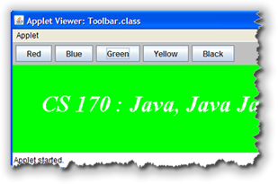
This lesson will teach you how to create and use arrays that contain objects instead of those that contain primitive values. Instead of using individualJButton objects in your applets, you may want to
use arrays of JButtons, like those
pictured in the applet here.
In addition, you'll learn to work with partial arrays. Sometimes, you don't need to process all of the elements in an array, and so the algorithms you studied in previous lessons don't exactly fit the bill.
You'll want to use partial-array-processing algorithms when:
- your array is constructed at run-time using user-supplied data. Since you don't know how many elements the array will contain, you'll need to know how to process a portion of an array by using sentinel loops, to keep track of how many elements the array contains.
- your want to insert or delete elements from an array. To do this, you need to supply space for the extra elements, and also keep track of which elements are valid. That means that you'll need to work with algorithms that modify a portion of an array by inserting or deleting elements.
Let's start, though, by looking at storing objects in POA (or
Plain Old Arrays). Along the way, we'll look at what
you need to do if you want to use the JButton
and other Swing Widgets in your Java applets.
Arrays Of Objects
You create an array of objects using exactly the same syntax
you use to create an array of primitive types.
Here, for instance, is how you create an array of
JButton objects for the toolbar that appears
at the top of the applet pictured at the beginning of this
lesson:
private JButton[] toolBar = new JButton[5];
Up to this point, objects and primitive arrays work just the same. Now, however, the two diverge.
Initializing the Elements
If toolBar were an array of double
or int, each element would automatically
be initialized to 0, so you could use the array immediately.
With object arrays, however, each element is initialized to
the special value null like this:
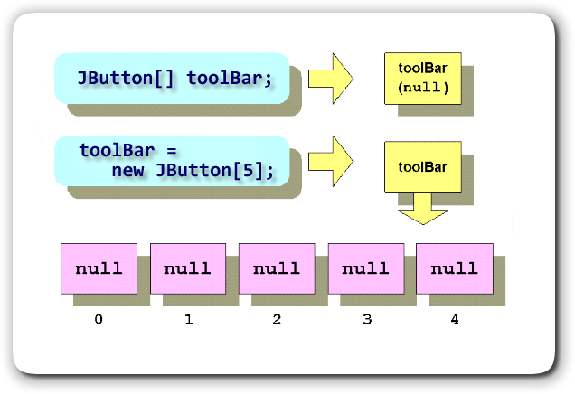
The value
null is not very useful in its own
right. Actually, its not useful at all. Before you
can use toolBar you have to fill each element
with a valid JButton reference by using the
new operator on each element in the array
like this:
int len = toolBar.length;
for (int i=0; i < len; i++)
{
toolBar[i] = new JButton(""+(i+1));
}
Once you're finished, each element in the toolBar
array points to a new JButton object, as this
illustration shows:
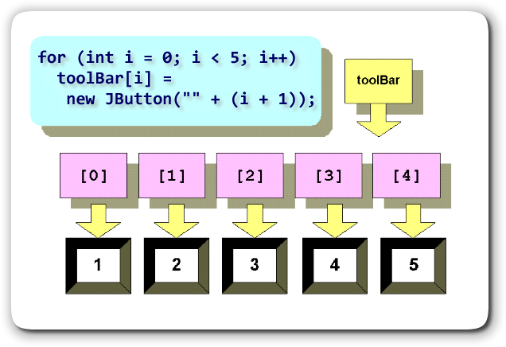
As you can see, every object array requires three steps to be useful:- Declare an array variable.
- Create (or instantiate) the array object.
- Create and attach objects for each element in the array.
Here's a little longer example you can study to make sure you understand how to create and use arrays of objects. Rather than showing you the entire listing for Toolbar.java, we'll just look at a few snippets. To view the entire listing, just click the link in the previous sentence.
JApplet versus Applet
If you want to use the Swing widgets, such as JButton,
inside your Java applets, then you can't use the
Applet class. Instead, you have to switch to the
Swing version of the class, named JApplet. This
requires you to make some changes to your code:
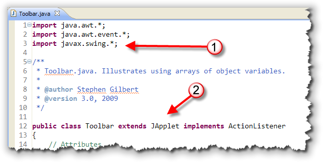
The first two immediate changes you'll notice are:- You don't need to import the
java.appletpackage. Even though theJAppletclass is a subclass of applet, it's actually defined inside thejavax.swingpackage, along withJButtonand friends. Since you want to use Swing widgets, you'd need that anyway. - Of course, since we're creating a
JAppletinstead of an applet, the class heading needs to reflect that as well.
The Toolbar init() Method
The init() method of Toolbar.java lays out the
user interface, initializes the toolBar array, and
hooks up event-handler methods to each button. Here's what it
looks like:
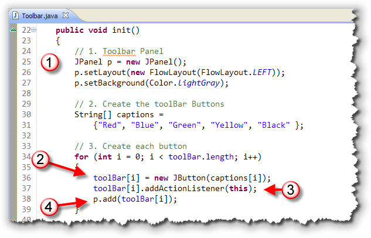
The first thing that you'll notice is that, unlike an ACMGraphicsProgram, you need to create the panels that
are used to house your buttons by yourself.
The section marked (1) shows the syntax for creating a
JPanel object and adding a layout manager
which will size and position the components placed in the
panel. The GraphicsProgram class contains several
fragments of already written code, very similar to this, to
create the panels where you placed your widgets in your
ACM programs.
The loop at the bottom of the init() method shows how
to create a series of JButton objcts and place them
int a JButton[] array, using a loop and a second,
parallel array of String objects for that
contain the JButton captions.
Inside the loop, these three things occur for each element of
the JButton[] array toolBar:
- Each element in the
Stringarray,captions, is passed as an argument to theJButtonconstructor creating theJButtonobjects for thetoolBararray. - Each
toolBarelement is attached to anActionListeneras it is created. Since the appletextends ActionListener, everyJButtonis "pointed" to the applet's ownactionPerformed()method. - The
JPanelobject, here namedp, and created at the top of theinit()method, is used to keep all of theJButtonobjects together visibily. Inside the loop, eachJButtonobject is added to theJPanelas it is created.
The captions array, which works in concert with
the toolBar array is known as a parallel array.
Parallel arrays are used when multiple, related values need to
be processed for each element in a collection. In this case, each
JButton needs its own caption value, so storing those
captions in a separate array is one solution.
Adding the Panels
Adding the panels to the applet, and painting the applet are both a little more complex than they are with ACM programs, or with old-style applets. (This is true for "pure Java" graphical applications as well.)
Here's the code at the bottom of the init() method
that places both the panel containing the buttons, and a second
JPanel object, named canvas that will
be used to display our message:
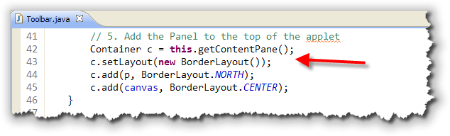
Unline regular applets, you can't add panels or buttons or anything else directly to theJApplet's surface. Instead,
you want to add your base components to the applet's
ContentPane. This is a generic Container
that is alread installed when the applet starts up. All you
do is call the JApplet getContentPane() method,
and store the result in a Container variable,
(traditionally called c).
Once you have a variable for the content pane, you usually
install a layout manager. The code shown here installs
a BorderLayoutManager, the same layout manager that
your ACM programs used to allow you to add components to the
north, south and so on.
The last step is to add your components to the content pane.
In your ACM programs, you could use the literals NORTH
and SOUTH when using the add() method.
With the standard Java Library GUI classes, you need to
specify BorderLayout.NORTH and so on, as I've done
here for both the panel containing the buttons (which goes at
the top), and the panel we'll use to display the message
(which goes in the center.)
The actionPerformed() Method
Since all of the JButton objects created
in the init() method are "hooked up" to the same
actionPerformed() method,
you have to find a way to tell exactly which
JButton was clicked, when the
actionPerformed()
method is called.
Using an array of objects makes that quite easy. Using
individual objects, instead of an array, you'd have to use an
if-else-if-else structure. With an array, you can
use a for loop as explained here.
Step 1: Who Fired?
The first step is to retrieve the Object that
generated the event. To do this, you call the ActionEvent
getSource() method, using the ActionEvent
object passed to the actionPerformed()
method as its event parameter.
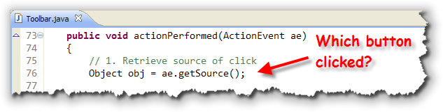
Step 2: Match It Up
Create an int variable—here I've named it
clicked—outside of your for loop.
It's important you don't create this variable in the
initializer section of your for loop, because
you need to reference it after the loop terminates.
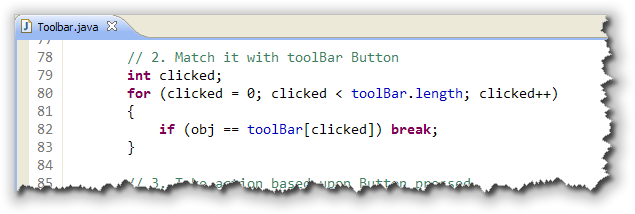
Write afor loop that steps through each
element in your toolBar array, and compares
the element to the Object that generated the
event. When you locate the correct object, simply
break out of the loop.
Notice that the loop uses the == operator,
not the equals() method, to see if
obj and the array elements match. That's because
we're checking to see if the two variables contain the same
refrerence, not checking the contents of the
respective elements. Of course, if two variables contain the
same reference value, then they both point to exactly the
same object.
Step 3: Take Action
Now, you have an int variable you can use in a
switch statement to take the appropriate action.
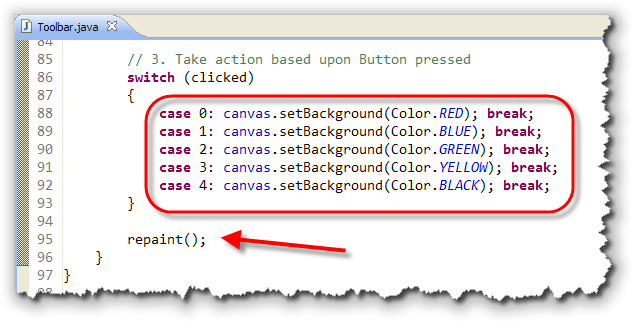
Notice that rather than changing the background color for the entire applet, you have to change the background color for thecanvas panel instead. After changing the
color, you should make sure that you send the repaint()
command so that your message is redisplayed.
You can
run the applet by clicking the link in
this sentence. If you don't want to run the applet, then
here's a snapshot for your perusal: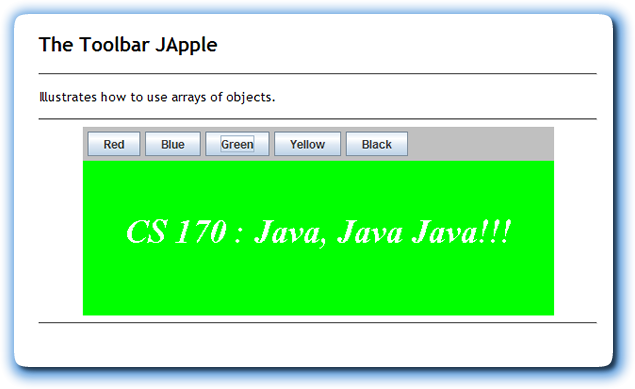
Processing Part of an Array
There are several situations when you only want to process part
of an array, rather than the whole thing. That means that instead of using
the "natural" loop bounds, (from 0 to less-than the length), you'll need
to keep track of which elements you actually want to process. It also
means that you can't use the foreach version of the
for loop.
The most common reason for processing only "part" of an array is when only a portion of the array actually contains valid data. Since the size of an array can't be changed after it's created, programmers often "plan for the worst case", and make their arrays large enough to hold the maximum amount of data that could possibly be required.
InputArray
In the SumAvgCount applet, we filled all of the elements with random numbers. Let's create an ACM console-mode program that allows the user to input any number of values, instead of automatically filling the array. Here's a program InputArray that shows you how you'd do it.
Capacity and Size
To do this, we need to keep track of how many values the user
has entered, and how many empty slots are still available. Traditionally,
these two numbers are known as the array's capacity
and its size. Here's a picture that might make things
a little clearer:
 The array shown here has a
The array shown here has a length of 10, which is also its
capacity. Only the first four elements have meaningful values,
though, so the size of the array is 4.
In the InputArray program, we first create a Scanner
variable to read the user's input. Of course, since this is an ACM
ConsoleProgram, we could use the built-in
readDouble() method. However, the ConsoleProgram
read methods can only read one number per line, while the Scanner
methods let you place several numbers on the same line, and then "pick them off."
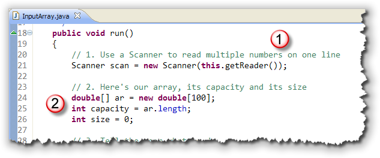
The prior examples you've seen of theScanner class all use
System.in to initialize the Scanner object. You
do that if you want to read from the system console. We want to read
from the ACM program console, though, so we initialize our Scanner
using the getReader() method designed for just this purpose.
After creating the Scanner, the program creates two
variables to store these numbers:
capacity, which stores the maximum number of items the user could enter,- and a separate variable,
size, to keep track of how many values have actually been entered.
We initialize capacity
using the built-in array length variable:
Reading the Input
To initialize the array, you'll use a sentinel loop along with the user input.
As each value is entered, you'll store it in the array,
and then increment the variable indicating the number of
items in the array like this:
 The input loop works like this:
The input loop works like this:
- The user is told what to enter and how to end the input (with a 0 or negative number).
- A "loop and a half" is used for input, with the necessary bounds, (that is, the maximum number of values have been entered), used to control the loop.
- Because we're using a loop-and-a-half, we need only
one input statement, into the local variable
num. - The loop's
ifstatement checks to see ifnumis the sentinel value, and exits the loop if it is. - If
numis a valid value, it is stored into the array, using thesizevariable as the index. - Finally, the
sizevariable is incremented, so that the next input value will be stored in the next element of the array.
Print the Results
The SumAvgCount program used a foreach
loop to process the array. With InputArray, though, you can't do that,
because not all of the values may in use. Instead, this program has to use
a traditional for loop because we only process the
"valid" elements, using the size variable to
control the loop:
 We'd like the output to look similar to the syntax used to write
an array literal, because it's a familiar form. That means that the
loop we use to print out the values must put a comma after each element,
except for the last.
We'd like the output to look similar to the syntax used to write
an array literal, because it's a familiar form. That means that the
loop we use to print out the values must put a comma after each element,
except for the last.
The easiest way to do this is to first, check the postcondition
value of size to make sure that the user has actually entered
any values. Otherwise, if the array is "empty", the loop would
"blow up" when we tried to print the first element in the array.
If the array does contain valid elements. The loop prints the first
element, and then all of the remaining elements starting at the
second. (Notice that the for loop index starts with
1 and not with 0.) Each output statement begins by printing the
following comma from the previous element, followed by the current
array element value.
Here's the output of the program with a few numbers entered:

Inserting and Removing Array Elements
The final algorithms that we'll cover in this lesson involve inserting items into, and removing items from. an array. Suppose, for instance, that instead of simply adding items to the end of the "unoccupied" section of numbers in the InputArray program, we placed each number into its correct position in the array.
Here's a picture that shows what I mean:
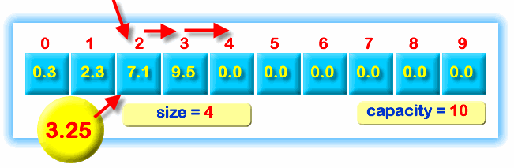
As you can see, the array is partially filled, and the next number, 3.25, has been input by the user. To put the number in its correct location we need to:- Locate the first number that is larger than the number we're going to insert into the array. In this case, that's the number 7.1. That's where we'll place our new number.
- Before we can store the number in the array, though, the element that's currently occupying that spot, (7.1), needs to be moved to the right, and the number occupying the spot it is moving to, (9.5), needs to be moved to the right as well. Since 9.5 is the last valid value in the array, we can stop there, but if the array contained additional numbers, they'd have to be moved as well.
Finally, after all of the existing numbers have been moved to the right, we can come back and put our new number in the spot that's been opened up for it.
These algorithms usually only make sense when used with partially filled arrays, those that use a separate size variable indicating how many elements are actually occupied. If you insert an element into a completely filled array, then the last element in the array will be lost when the previous items are moved to make room for the inserted item. In a similar way, when you remove an item from regular array, you have to way of indicating that the last value no longer contains a valid entry.
InsertArray
The program InsertArray.java modifies the InputArray program from the previous section, so that the individual elements are added in sorted order.
We'll just look at the three sections that are different that those appearing inside InputArray.java.
Find the Position
The first step is to find the position where the new element should be inserted. You do that by writing a loop that looks for the first element that is larger than the element you want to insert. Here's the code that does that:
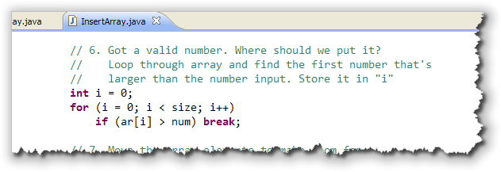
Note that the index value used in thefor loop is not
declared inside the loop initializer section (although it is initialized there).
That's because, after the loop is finished, the variable i will
contain the location where the new element should be inserted. If we
declared the variable inside the loop initializer, we couldn't use it
outside of the loop body.
Note also that if there are no elements in the array that are larger
than the number you are inserting, that i will contain the same
value as size when the loop ends, and that the number will then
be added to the end of the current elements, which is what we want.
Move the Existing Elements
Before we can store num in the array, we need to move the
existing elements to the right, to "open up a hole" for the new value.
Here's the code from InsertArray that does that:
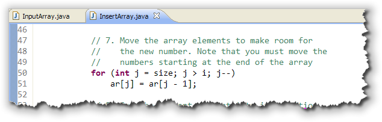
Note that rather than copying the elements from left to right, which wouldn't work correctly, we start at the end of the array, and move to the left, until we get to the location where we intend to insert the new element.Insert the New Element
After moving the elements, you'll simply copy the new number into the
insert location, and then update the value of size as shown
here:
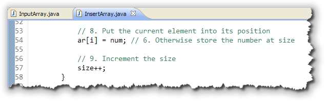
If we run the program, using exactly the same input as we used when we ran InputArray earlier in this lesson, you'll see that the numbers that are printed are now in sorted order: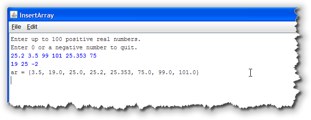
Removing Elements
Removing the elements in an array works in an almost identical manner as inserting elements, except, instead of moving a portion of the array to the right, to "open up a hole", you need to move all of the elements to the right of the deleted element leftwards to "close up the gap".
Here's a small fragment of code that does that. The variable delPos
is the location of the element you want to delete:
for (int i = delPos; i < size-1; i++)
ar[i] = ar[i + 1];
Note that the bounds of this loop is not i < size,
but i < size-1. That's because, in the loop body we need
to grab the value to copy from ar[i + 1]. If we used
size as the bounds, we'd copy from an invalid element.
Coming Up Next ...
In this lesson, we looked at two array topics. You first learned how to create arrays that contain objects. Because objects are references, an object array requires an additional initialization, used to instantiate the objects that the array elements refer to.
In addition, you learned how to process arrays that are only partially filled. Use this when you need to process varying amounts of user data, or, when you need to insert or delete elements in an array.
That's the last of the online lessons for this week. In the mean time, I'm sure you have some testing and debugging to get to. See you next week!